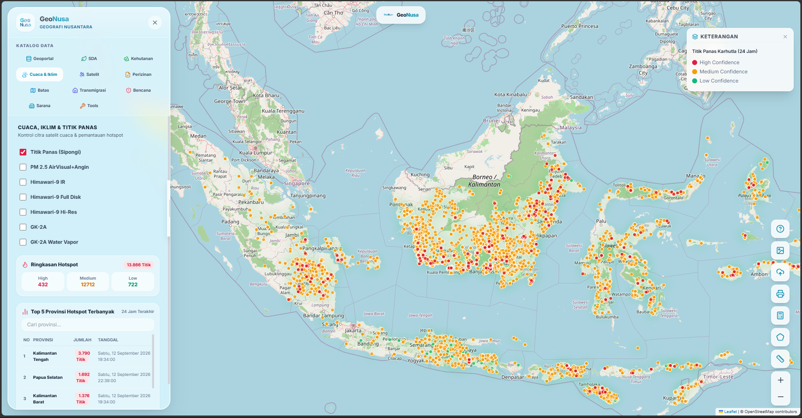

Mempermudah dalam mengakses data spasial di Indonesia.

Geonusa bersumber dari data open source aktif.
Katalog data spasial bersumber dari Geoportal tiap daerah.
Sumber Daya Alam & Lingkungan.
Peta & layer tematik kehutanan.
Citra satelit cuaca & titik panas.
Citra satelit pengamatan global.
Peta konsesi, HGU, dan pertanahan.
Peta batas administrasi wilayah.
Kawasan khusus transmigrasi.
Indeks bahaya & risiko (InaRisk BNPB).
Fasilitas umum & infrastruktur.
Ukur, upload file & legenda.
Daftar Metadata API Rest setiap data geospasial.